Chapter 10 · Part 1 — The True Pearl
light slanted into the tree house.
No time at all had passed since they’d left. Day was breaking.
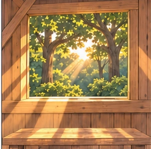
Jack rolled up the ancient scroll. He tucked it into the corner.
“We solved the first ,” he said. “Three more to go.”
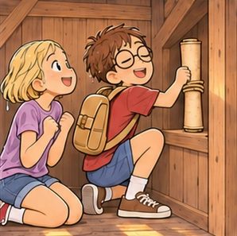
“I don’t see another scroll,” said Annie. “Maybe tomorrow we’ll get the next .”
“That’s okay,” said Jack. “I think I need to rest—and dry out.”
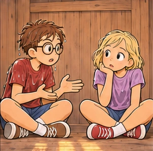
His T-shirt and shorts were still . His , too. Only his shoes and socks were dry.
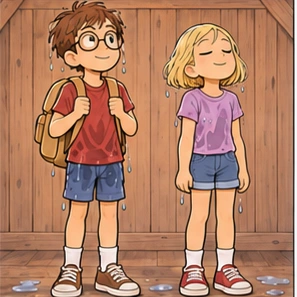
“And this needs to dry out, too,” said Annie. She put the wet book in a patch of sunlight.
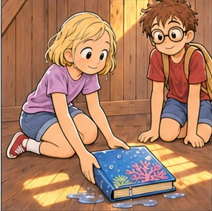
Then Jack and Annie down the .
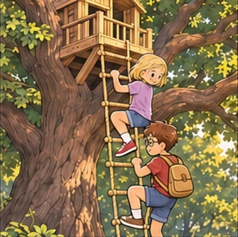
They walked through the woods, through leafy shadows and golden light.
They left the woods and started down their street.
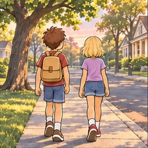
“You know, we should have found the answer to the right away,” said Jack. “The oyster was on the all along.”
“I know, but we wouldn’t have had so much fun,” said Annie.
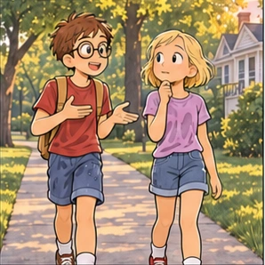
“Fun?” said Jack. “You call being squeezed by an and chased by a shark fun?”
“Don’t forget the ,” Annie said simply.
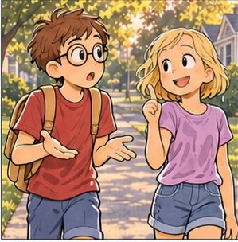
Jack smiled. “Right,” he said. The made up for everything. They were fun.
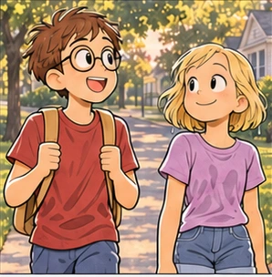
“I guess they were the true in the oyster,” said Annie.
“Yep … ” said Jack. “I wonder what Sam is doing right now.”
“Sam?” Annie grinned at him. “You’re nuts,” she said.
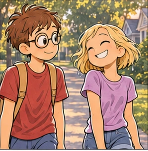
They their steps and went into their house.
“We’re back!” Annie shouted.
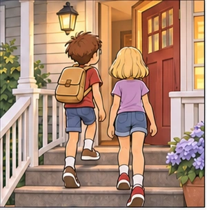
“Did you get your shoes wet?” their mom called.
“Not one bit,” called Jack. Then he and Annie slipped up the stairs to change their clothes.